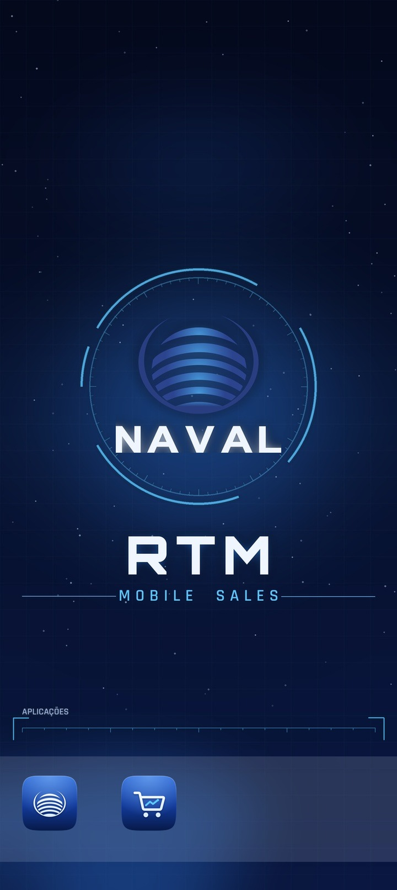

Staff Meeting - Direcção Comercial Internacional
A venda, no acto.
A venda porta a porta do grupo passou a ser digital.
Ponto de situação, do arranque à operação no terreno.

Ecrã real · a aplicação como está instalada
e a funcionar nos smartphones das 11 rotas
Gestão central: o vendedor só acede a estas duas aplicações
11
Rotas activas
100%
Vendas pelo RTM a 22/10
861
Clientes registados
≈ 651
Rotas em 2030
O que é o RTM
O RTM – Mobile Sales é a plataforma de venda móvel do Grupo Naval.
Substitui a requisição em papel e a facturação no dia seguinte.
Vendedores de rota, porta a porta.
Produtos Foodtec, Higitec e Refitec.
Um smartphone com 2 aplicações
e uma impressora portátil, por rota.
Encomenda, cobrança e factura
no acto, comunicada à AGT.
Vendas, stock e clientes visíveis
no back-office, no próprio dia.
Kits de venda no terreno
11
Um por rota: smartphone com as aplicações de venda e impressora portátil.
Smartphones geridos de forma central: o vendedor só tem acesso às duas aplicações de venda.
Porquê o RTM
| Dimensão | Modelo manual | Modelo RTM |
|---|---|---|
| Pedido | Requisição em papel | Rota do dia na aplicação |
| Intervenientes | 9 no ciclo de venda | 3 no ciclo de venda |
| Facturação | D+1, após conferência | Documento no acto da venda |
| Stock | Reconciliação manual | Visível no RTM no acto 2.ª fasereconciliação com o SAP |
| Tempo por venda | Cerca de 18 minutos | Meta: 10 minutos |
Percurso · planeado vs. real
Vendas via RTM e fora do RTM · 20 a 22/10
100%
das vendas passaram pelo RTM a 22/10,
depois de 19% a 20/10 e 39% a 21/10.
19%
no RTM a 20/10
39%
no RTM a 21/10
100%
no RTM a 22/10
Vendas registadas no RTM · 20 a 22/10
23,57 M AKZ com IVA (14%) · 60 documentos · 56 clientes · 11 rotas a vender.
Documentos emitidos no acto e comunicados à AGT por facturação digital.
As vendas de 20/10 foram também facturadas no SAP a 21/10.
Facturado no RTM, sem IVA
20,67M AKZ
Com IVA: 23,57 M AKZ
Média: 6,89 M AKZ por dia
Documentos · clientes
60 · 56
Média: 345 mil AKZ
por documento, sem IVA
Pago no acto
97%
59 facturas-recibo: 19,99 M
1 factura a crédito: 0,68 M
Vendas 2026
O RTM acrescenta 576 M AKZ às vendas de 2026, entre Outubro e Dezembro.
Julho a Setembro: 1.605 M reais, 26 M acima do forecast (1.579 M).
Outubro em curso: 214 M até 22/10. De 1 a 19/10, o ritmo (12,4 M/dia) ficou abaixo do forecast.
O plano previa +973 M com arranque a 21/09. O arranque a 20/10 adiou 397 M.
Real
3.961
Jan–Set · M AKZ
Forecast sem RTM
1.846
Out–Dez · M AKZ
Ganho RTM
576
Out–Dez · plano era +973
Total 2026
6.383
sem RTM: 5.807 · RTM +10%
Mercado e operação
| Empresa | Ref. | Famílias | PVP (AKZ) |
|---|---|---|---|
| Foodtec | 19 | Massas, farinha, arroz | 2.600–25.000 |
| Higitec | 18 | Fraldas, sabão | 7.500–31.800 |
| Refitec | 8 | Óleos alimentares | 21.000–54.000 |
Procedimento de venda
Escolha a fase e avance passo a passo, ou carregue em Reproduzir.
Exemplos · da PO à entrada em armazém
Exemplos ilustrativos do circuito de documentos e de mercadoria na 1.ª fase.
Para a Refitec, o circuito é igual ao da Foodtec.
Exemplo 1 · Non-Food Sabão da Higitec
Naval Trading · SAP
Encomenda à Higitec:
200 caixas de sabão.
POHigitec · fábrica
A fábrica emite a GI
e envia-a à Naval.
GI · Goods IssueNaval Trading · SAP
A PO é convertida em GR.
Armazém HIGITEC PIV.
GR · Goods ReceiptNaval Trading · SAP → RTM
Dá saída de todo o stock no SAP.
Manual na 1.ª fase.
Transferência SAP to RTMRTM · armazém Non-Food
Entrada no armazém Non-Food,
fisicamente na Higitec.
Entrada RTMExemplo 2 · Food Massa da Foodtec
Naval Trading · SAP
Encomenda à Foodtec:
300 fardos de massa.
POFoodtec · fábrica
A fábrica emite a GI
e envia-a à Naval.
GI · Goods IssueNaval Trading · SAP
A PO é convertida em GR.
Armazém REFITEC/FOODTEC PIV.
GR · Goods ReceiptNaval Trading · SAP → RTM
Dá saída de todo o stock no SAP.
Manual na 1.ª fase.
Transferência SAP to RTMRTM · armazém Food
Entrada no armazém Food,
fisicamente na Foodtec.
Entrada RTMSaída de stock no SAP
O documento «Transferência SAP to RTM» é o que dá saída do stock no SAP.
São gerados dois: um para os artigos Food (REFITEC/FOODTEC PIV → armazém RTM Food)
e outro para os artigos Non-Food (HIGITEC PIV → armazém RTM Non-Food).
Depois: transferência para as rotas, das 15:30 às 17:00, conforme as PO dos vendedores.
2.ª fase: a transferência SAP → RTM passa a ser automática.
Registo de clientes
Meta: 10.000 até 31 de Dezembro de 2026, só com as 11 rotas actuais.
No SAP, de Julho a Outubro, as 11 rotas venderam a apenas 99 clientes identificados:
as vendas a dinheiro ficavam em clientes genéricos. No RTM, cada cliente fica registado e validado na AGT.
Da meta de 10.000
8,6%
792 activos · 66 pendentes de validação
Ritmo necessário
154por dia
15 por rota e por dia, nos 57 dias restantes
Organização
Arranque às 07:15 e saída para rota até às 07:30. Balanço do dia às 15:00.
Carga das rotas para o dia seguinte das 15:30 às 17:00.
Coordenador de Operações
Michael Samson
Validação de Dados
Sirak Kahsay
Logística
Teresa Gomes
Logística e Distribuição
Manuel Queia
Coordenador Regional
Nathan Alemayehu
Equipa de terreno
11 comerciais
Afectos aos comerciais
11 motoristas
Economia e retorno · Valeu a pena?
+30%
de vendas por dia nos 3 primeiros dias
com RTM, face a 1–19 de Outubro.
M AKZ/dia, sem IVA: 20–22/10: 16,1 · 1–19/10: 12,4 · Jul–Set: 22,1
Margem extra do RTM (15%) menos investimento, em M AKZ.
Investimento no ano 1
135,5M AKZ
Capex 49,38 M (único)
Opex 21,54 M por trimestre
Para pagar o custo do RTM
+48M AKZ/mês
acima do nível de vendas anterior
Plano: 57 M por rota/mês (era 35,7)
Retorno, se o plano se cumprir
Jan 2027
Cerca de 3 meses
após o arranque
Efeito de escala
−54%
Custo por rota/mês: 652 mil AKZ
com 11 rotas · 299 mil com 30
Expansão
No início de 2027, pelo menos 1 rota em cada uma das 21 províncias, para analisar e depois expandir.
Por fases, com decisão GO / HOLD / REPLAN em cada uma. Cenário revisto todos os trimestres.
Fase 0 · 2026
11 → 18
Luanda.
Piloto e estabilização.
Fase 1 · 2027
18 → 100
Início: ≥ 1 rota em cada
uma das 21 províncias.
Fase 2 · 2028
100 → 260
Expansão nas províncias
com melhores resultados.
Fase 3 · 2029
260 → 460
Reforço da cobertura
em todas as províncias.
Fase 4 · 2030
460 → 651
Cobertura das
21 províncias.
Estado e próximos passos
| Frente | Estado |
|---|---|
| Sistemas e equipamentos | Operacional11 kits no terreno |
| Catálogo | Normalizado45 referências |
| Equipa de gestão | Completa |
| Vendas e facturação | Em cursono RTM desde 20/10 |
| Facturação digital AGT | Operacionalfacturas do RTM comunicadas à AGT |
| Dados móveis Unitel + Africell | Em preparaçãobalanceamento entre as duas redes |
| Registo de clientes | Em curso861 (8,6%) |
| Zonamento das rotas | Em definição |
| Estação de carga | Em preparação |
| Back-office RTM ↔ SAP | 2.ª fase |
| Rotas de distribuição | 2.ª faseentrega em D+1 por 11 motoristas |
Apoio da Direcção Comercial
Confirmar os limites das 11 rotas antes de os fixar.
Apoiar as rotas abaixo de 14 clientes por dia, para chegar aos 10.000.
Calendário e recursos: back-office RTM ↔ SAP e rotas de distribuição.
Mínimos de GO / HOLD / REPLAN para abrir cada fase.